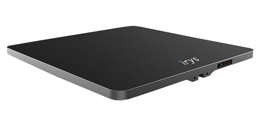

RFID reading surface for controlled jewellery inventory workflows.
Built for Irys workflows
This product is part of the Irys RFID hardware ecosystem for jewellery and diamond inventory operations. For exact configuration and deployment requirements, request a tailored recommendation.